AI Academy · Level 4 · Grade 9 · Week 22 · Student lesson
Train a Regression Model
Learn to understand, design, build, test and explain AI systems responsibly.
Project: Responsible Plant Classifier
Before you start
Weeks 20–21: evaluate candidate models with a stated loss.
Plan time to read, investigate and explain. Keep predictions separate from observations.
Student lesson · 1 of 15
Your mission
Your learning target
I can fit a line from a declared training candidate set.
I can separate training loss from validation comparison.
I can interpret slope and intercept with units.
Remember before reading
Close your notes first. A rough first answer helps us choose the right starting point; it is not a score for your ability.
Without opening the old lesson, explain one key idea from Absolute Error and MAE. Give an example and a mistake that the idea helps you avoid.
Without opening the old lesson, explain one key idea from Regression and Residuals. Give an example and a mistake that the idea helps you avoid.
Without opening the old lesson, explain one key idea from Accuracy and Imbalance. Give an example and a mistake that the idea helps you avoid.
After trying, check the relevant lesson or ask your teacher. Change the part of your explanation that the evidence shows was wrong.
A fitted relationship should be interpreted, tested on unseen values, and compared with a simple baseline.
Builder name and experiment date:
Readiness for the connected explanation
How is MSE calculated?
This week’s end goal
By the end, I can explain train a regression model using a traced example and a stated limitation.
Student lesson · 2 of 15
Notice the evidence
PICTURE ENTRY
Notice → Predict → Explain
Begin with visible evidence; do not explain more than the picture and information support.
Name three visible details without interpreting them.
Predict the data, model, or evaluation decision being made.
Identify one hidden assumption that could change the result.
State what evidence would confirm or reject your prediction.
My prediction and supporting evidence:
A closer explanation
A line predicts y as m*x+b. In this classroom search we compare a small declared set of slopes and intercepts; this is not a full least-squares solver over all possible lines. Use training error to choose a candidate, then freeze it before validation.
Use fictional classroom data throughout this investigation. Keep the task, units, reference labels and data split visible as you reason. Earlier weeks supplied the model-building process; this week examines fitting a line.
Student lesson · 3 of 15
See how it works
ML MECHANISM
Input → Model → Evidence
Trace the information, fitted behavior, and evaluation proof separately.
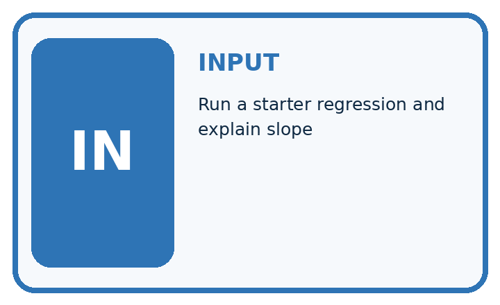
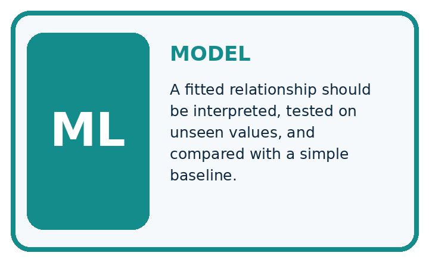
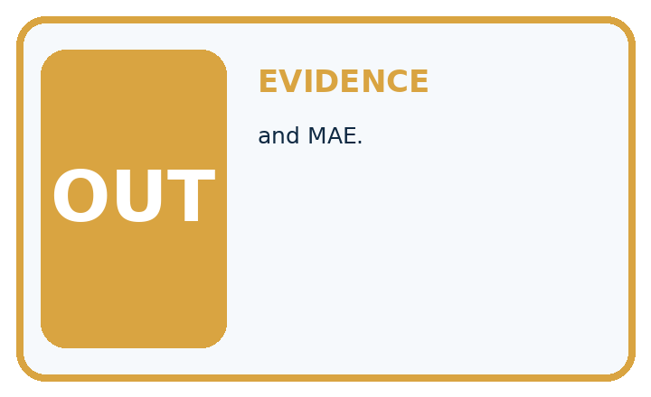
QUESTION Run a starter regression and explain slope, prediction, residual, and MAE.
MODEL IDEA A fitted relationship should be interpreted, tested on unseen values, and compared with a simple baseline.
PROOF NEEDED Use an unseen case, visible calculation, error analysis, and a stated limitation.
Draw a fresh data → model → prediction → evaluation trace:
A closer explanation
Training pairs are (0, 1),(1, 3),(2, 5). Candidate A has m 1 b 1, B m 2 b 0, C m 2 b 1. Predictions are A [1, 2, 3], B [0, 2, 4], C [1, 3, 5]. Training squared-error sums are 5, 3, 0 respectively, so choose C. Ties would use the earlier listed candidate.
training = [(0, 1), (1, 3), (2, 5)]
candidates = [(1, 1), (2, 0), (2, 1)]
def sse(line):
m, b = line
return sum((y - (m * x + b)) ** 2 for x, y in training)
chosen = min(candidates, key=sse)
print([sse(line) for line in candidates])
print(chosen)
# [5, 3, 0], then (2, 1); first candidate wins ties.Trace the calculation on paper before running this optional Python check. Use the stated fictional inputs and compare intermediate values. The code checks this example; your independent workbook case uses different evidence.
Connect the picture and the explanation
Point to the input, the deciding step and the result in this week’s visual. Explain the same step in ordinary words. A picture helps when you can say what each part represents.
Student lesson · 4 of 15
Compare the cases
EVALUATION DESIGN
Four Tests, Four Kinds of Evidence
A system is not understood until it survives more than one comfortable example.


NORMAL Expected data and expected behavior.
BOUNDARY Value close to a threshold, ambiguous label, or uncertain prediction.
MISSING Necessary field, label, source, or measurement is unavailable.
SHIFTED New lighting, species, device, subgroup, or time condition.
Which case most threatens today's claim, and why?
Change one thing in the pictured case
Change: Evaluation observation becomes8 instead of6.
Prediction: Absolute evaluation error stays1 cm, but residual changes from-1 to+1.
Reason: Prediction7 remains frozen; changed observation8 reverses the error direction.
Student lesson · 5 of 15
Words that unlock the idea
VOCABULARY
Words You Can Calculate and Defend
A definition matters when it lets you interpret a new dataset, model, or result.
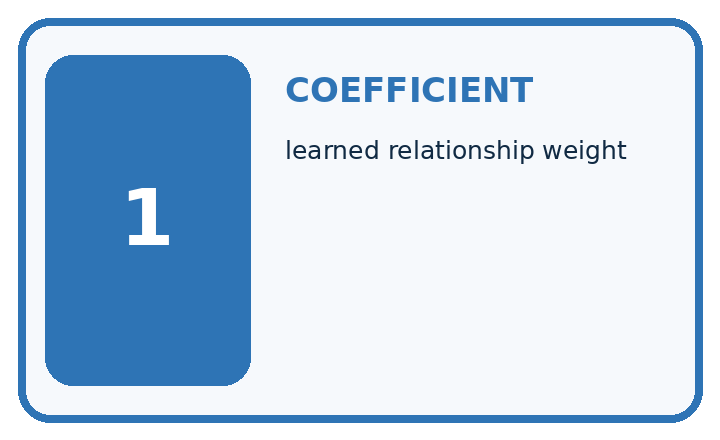
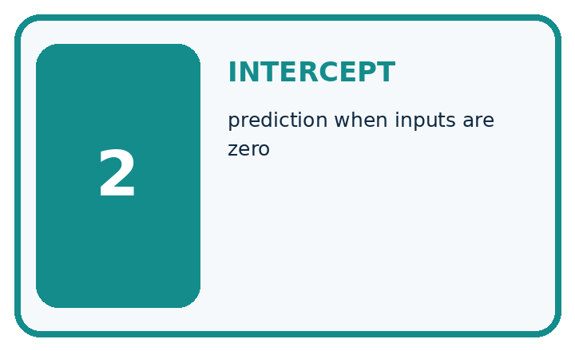
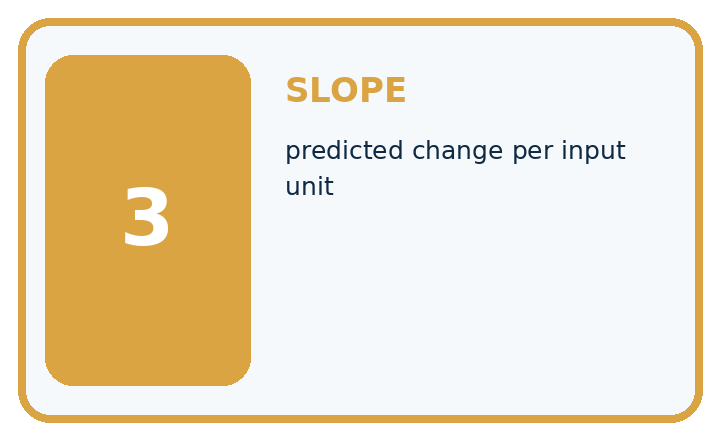
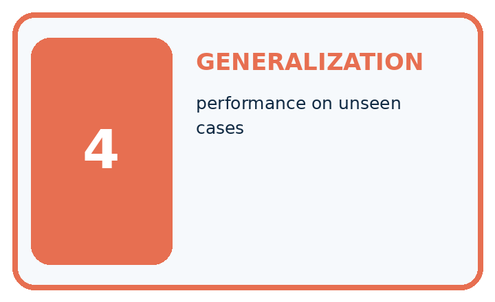
| Term | Precise meaning | My ML example |
|---|---|---|
| coefficient | learned relationship weight | |
| intercept | prediction when inputs are zero | |
| slope | predicted change per input unit | |
| generalization | performance on unseen cases |
Repair the claim using a definition, calculation, or test record:
Words used in the closer explanation
| Word | Meaning |
|---|---|
| Slope | Change in predicted target per unit change in x |
| Intercept | Predicted target when x is zero |
| Candidate set | The declared model choices searched |
| Fitting | Selecting model values using training evidence |
Student lesson · 6 of 15
Follow a worked example
WORKED EVIDENCE
Reason Step by Step
Predict first. Then check each step. A correct answer without visible evidence cannot be audited.
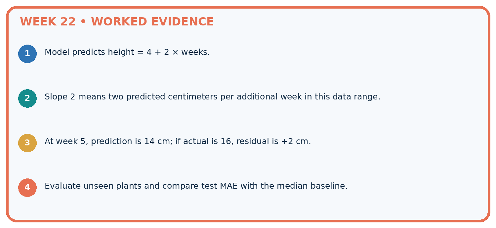
STEP 1 Model predicts height = 4 + 2 × weeks.
STEP 2 Slope 2 means two predicted centimeters per additional week in this data range.
STEP 3 At week 5, prediction is 14 cm; if actual is 16, residual is +2 cm.
STEP 4 Evaluate unseen plants and compare test MAE with the median baseline.
Recalculate, retrace, or restate the evidence independently:
A closer explanation
Fitting a line at a glance
Learn from the worked case
Cover the result before checking it. Say what is given, choose the procedure, and follow one step at a time. Then uncover the result and explain your first mismatch. Ask why a step is allowed, not only what number it produces.
A pictorial worked case: Train a Regression Model
Fit a toy growth line from training pairs, then leave evaluation labels out of fitting.
The facts we will use
Training(day, height):(0, 1),(1, 3),(2, 5). Candidates y=2x+1 and y=x+1. Evaluation pair:(3, 6).
All inputs and outcomes in this worked example are invented classroom data; no real model run is claimed.

Read the picture one step at a time
Why this result follows
Read the picture in order. At day3 predict7 versus observed6: absolute error1 cm. The arrows show which recorded input or intermediate result each decision uses. Explain the deciding step aloud before checking the changed case; pointing to the final answer alone does not show how it follows.
What this example does not establish
An exact fit to three toy pairs does not establish a biological growth law or justify long-range extrapolation.
Student lesson · 7 of 15
Find and repair a mistake
ERROR DETECTIVE
Compare → Diagnose → Repair
Do not patch the answer. Find the earliest unsupported assumption, data problem, or experiment error.
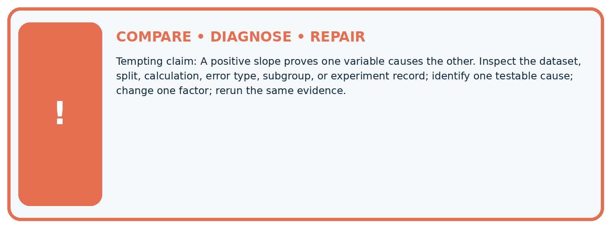
| Evidence record | Expected | Actual | Likely cause / next test |
|---|---|---|---|
| normal case | passes | ||
| boundary case | defined behavior | ||
| missing case | safe fallback | ||
| shifted case | measured limit |
Diagnose one cause and name the cleanest next experiment:
A closer explanation
Record candidates, training rows, tie policy and chosen parameters. Do not add a candidate after seeing validation and report it as if only the original search happened. A zero training loss can coexist with validation mistakes.
Student lesson · 8 of 15
Practise together
ML STUDIO
Specify Before You Run
A trustworthy result can be reproduced from the recorded data, code, settings, and evaluation rule.

Experiment record
QUESTION + intended use + success threshold
DATA version + grouped split + leakage check
CODE/preprocessing + features + model + settings + seed
METRICS + positive class + units + denominators
PREDICTIONS + errors + subgroup slices + limitations
HUMAN reviewer + release, revise, limit, or stop decision
Write the minimum record needed to reproduce today's result:
A closer explanation
If x measures days and y measures cm, slope 2 means two predicted cm per day and intercept 1 means one predicted cm at day zero. Predicting far outside the observed x range is extrapolation and may fail even when the training fit is exact.
Practise with less help: Score validation
Use workbook W2 for the connected example “Fitting a line”. First fill the input and rule boxes. Try the middle steps before asking for a hint. After a hint, try the next step yourself.
| Plan | Do | Check |
|---|---|---|
| What is given? Which rule or procedure applies? | Record each intermediate step. | Does the result follow? What remains unknown? |
Explain your trace to a partner. Your partner points to one step to check. Swap roles on the next case. Each person writes their own explanation.
Check your reasoning
Use the worked case for Fitting a line. Proposed explanation: “A final answer is enough”. Decide whether this explanation is supported. Point to the step or supplied fact that decides; explain your repair if needed.
Answer on your own before discussion. If you are unsure, say which step you need help with.
Explain the picture
May day3’s evaluation label choose the candidate line? Point to the relevant step in the picture, then write the changed result and the rule or evidence that supports it.
This is supported practice. Keep the separately named independent case for an attempt before feedback.
Student lesson · 9 of 15
Run the investigation
EVIDENCE LAB
Predict → Run → Calculate → Interpret
Keep the test conditions fixed, record every result, and change only one planned factor.
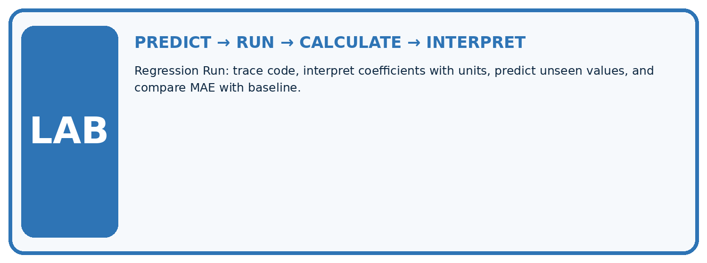
1. Write the hypothesis and expected evidence before running.
2. Regression Run: trace code, interpret coefficients with units, predict unseen values, and compare MAE with baseline.
3. Run one normal, one boundary, one missing, and one shifted case.
4. Calculate the metric from raw counts or row-level errors.
5. Interpret what changed, what did not, and what remains unsafe or unknown.
| Case | Prediction | Actual | Calculation / evidence | Meaning / next test |
|---|---|---|---|---|
| Normal | ||||
| Boundary | ||||
| Missing | ||||
| Shifted |
Plan → try → check
Before trying: what do I expect, and why? While trying: which step could first go wrong? Afterwards: what did I actually observe, and what should change? Keep “not run” if you only traced the procedure.
Student lesson · 10 of 15
Build your understanding
MASTERY
From Knowing the Word to Owning the Idea
Move upward only when you can produce evidence without copying the example.

DEFINE Use all four terms precisely: coefficient, intercept, slope, generalization.
CALCULATE Reproduce the worked evidence with units and denominator.
TRACE Explain the data, code or decision path.
DIAGNOSE A positive slope proves one variable causes the other.
TRANSFER Solve a fresh dataset or model case.
IMPROVE Change one cause and rerun fixed evidence.
DEFEND State intended use, metric, limitation, and human responsibility.
Student lesson · 11 of 15
Connect your project
CUMULATIVE PROJECT
Responsible Plant Classifier
Every week adds one reviewable artifact to the same evidence-based capstone.
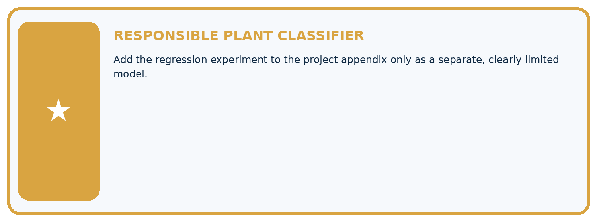
Which requirement or risk does this artifact address?
Which dataset, split, code, and metric version does it use?
What normal and shifted cases were tested?
What remains uncertain or weak?
What decision still belongs to a teacher or qualified human?
My evidence-linked project decision:
Evidence for your project
For your Responsible Plant Classifier, save the input, procedure, observed result and limitation of this check. Label this worked example as practice; use a different, previously unreviewed case when checking independent understanding.
Student lesson · 12 of 15
Show what you know
INDEPENDENT PROOF
Explain • Calculate • Transfer • Defend
Complete this with a fresh case after guided practice and compare it with the mastery criteria.
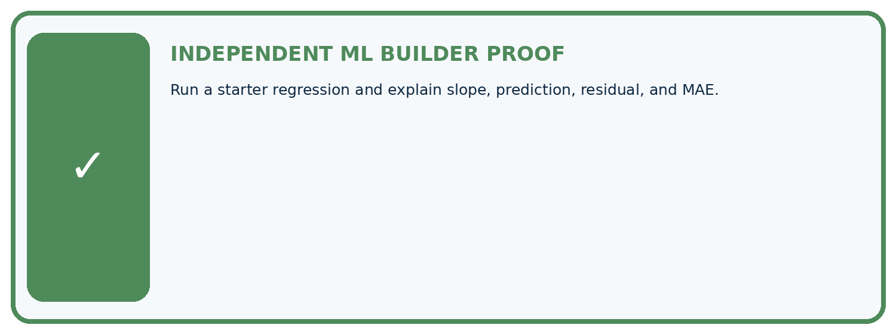
□ Define the task, feature/target roles, and intended-use boundary.
□ Show the calculation, code trace, or experiment record.
□ Test a normal case and one revealing boundary, missing, or shifted case.
□ Diagnose one failure without changing several factors at once.
□ Name a limitation, fairness concern, and the human-review action.
Independent evidence and defense:
My level: □ Not yet □ With one hint □ Independently □ I can teach and defend it
Student lesson · 13 of 15
Study a complete case
Week 22 Worked case
Use the supplied details to practise the weekly concept before attempting the independent question. This case extends the illustrated lesson.
The situation
Supplied fitted rule: height=2 times age+1. Held-out observations are (3,8),(4,9).
The question
Predict and evaluate; distinguish inference.
Worked explanation
Predictions 7,9; errors 1,0; MAE=.5 cm. Applying a supplied equation does not show how it was fitted.
Explain it in your own words
Which detail supports the answer, and why does it matter?
Trace the supplied case visually
Apply the fitted equation, then evaluate
| Evidence or stage | Value or result |
|---|---|
| Rule | height = 2 × age + 1 |
| Age 3 | Predict 7, actual 8, absolute error 1 |
| Age 4 | Predict 9, actual 9, absolute error 0 |
| MAE | 0.5 cm |
Supplied fitted rule: height=2 times age+1. Held-out observations are (3,8),(4,9).
Predict and evaluate; distinguish inference.
Predictions 7,9; errors 1,0; MAE=.5 cm. Applying a supplied equation does not show how it was fitted.
Student lesson · 14 of 15
Try a new case independently
Independent case: Apply independently
Training (0, 2),(1, 5),(2, 8). Candidates m 2 b 2, m 3 b 1, m 3 b 2. Select by SSE, then score (3, 10),(4, 15) with MAE.
Attempt this case before feedback. Record any help. Earlier examples below are further practice; a case already practised with feedback cannot establish fresh transfer.
Week 22 Independent application
Close the worked explanation. Apply the idea to this different question without copying.
A regression model has validation MAE 2.4 cm; a training-mean baseline has validation MAE 2.0 cm on the same examples. Which performs better on this metric?
My answer, with a trace, calculation or supporting evidence
Create and test
Change one relevant detail. Predict the result before testing. Include a boundary or missing-information case when it helps reveal a limit.
My changed input and expected result
Connect to your project
Add the regression experiment to the project appendix only as a separate, clearly limited model.
The evidence I will keep
Your teacher has the independent answer and scoring criteria. Complete the matching workbook week to keep your practice evidence together.
Transfer practice from the original programme
Training points (x,y)=(1,3),(2,5),(3,7). Compare y=x+1 and y=2x+1 by training MAE; select one, then predict held-out x=4, actual=10. Explain what was fitted.
Use feedback to improve
Attempt the independent case before hints. Record whether you worked alone, used a hint or followed a model. After feedback, fix the first unsupported step and explain why it changed. A later check uses a changed case, not a copied answer.
Student lesson · 15 of 15
Fit and test a straight-line regression model
Fit and test a straight-line regression model
Estimate slope and intercept from training pairs using least squares. Ages are weeks and heights are cm. Test targets are excluded from fitting; training ages must include distinct values.
Math bridge: fitting the line
A straight line predicts y = slope × x + intercept. Slope is the change in predicted height for one extra week; intercept is the prediction at x=0, which may lie outside the measured ages. You need means, subtraction, multiplication and squared numbers for this example; calculus is not required.
| x (weeks) | y (cm) | x − mean x | y − mean y | Product | Squared x difference |
|---|---|---|---|---|---|
| 1 | 3 | −1 | −2 | 2 | 1 |
| 2 | 5 | 0 | 0 | 0 | 0 |
| 3 | 7 | 1 | 2 | 2 | 1 |
Mean x=2 and mean y=5. Add the product column: 4. Add squared x differences: 2. Slope=4/2=2 cm per week. Intercept=5−2×2=1 cm. This least-squares formula chooses the line minimising squared training errors when the x values are not all identical. Compare its held-out error with a baseline; a good training fit alone is insufficient.
"""Fit a line to training pairs and evaluate a separate example."""
train = [(1, 3), (2, 5), (3, 7)]
if not train:
raise ValueError("Training examples are required")
n = len(train)
x_mean = sum(x for x, y in train) / n
y_mean = sum(y for x, y in train) / n
num = sum((x - x_mean) * (y - y_mean) for x, y in train)
den = sum((x - x_mean) ** 2 for x, y in train)
if den == 0:
raise ValueError("Distinct training ages are required")
slope = num / den
intercept = y_mean - slope * x_mean
test = [(4, 10)]
if not test:
raise ValueError("Test examples are required for MAE")
preds = [slope * x + intercept for x, y in test]
mae = sum(abs(y - pred) for pred, (x, y) in zip(preds, test)) / len(test)
print(slope, intercept, preds, mae)
Expected output: 2.0 1.0 [9.0] 1.0
The fitted line is height = 2 times age + 1. At four weeks it predicts 9 cm; the observed height of 10 cm gives an absolute error and one-case MAE of 1 cm. Fitting a line and applying a supplied line are different activities. One held-out case is very limited evidence.
Independent code change
Change the held-out height from 10 to 8 without changing the training data. Predict the fit, prediction and MAE.
My prediction and evidence